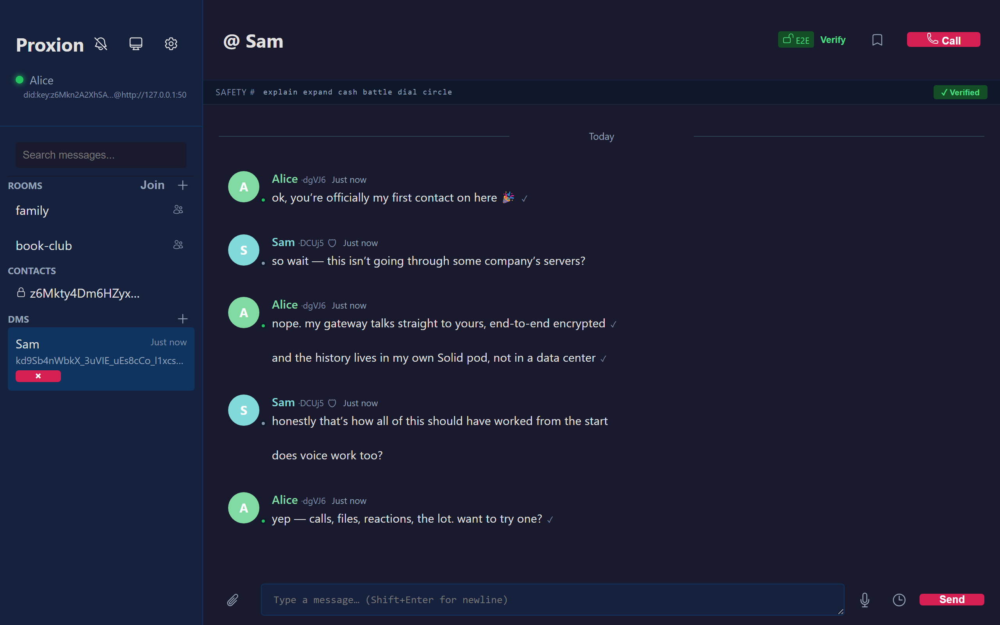
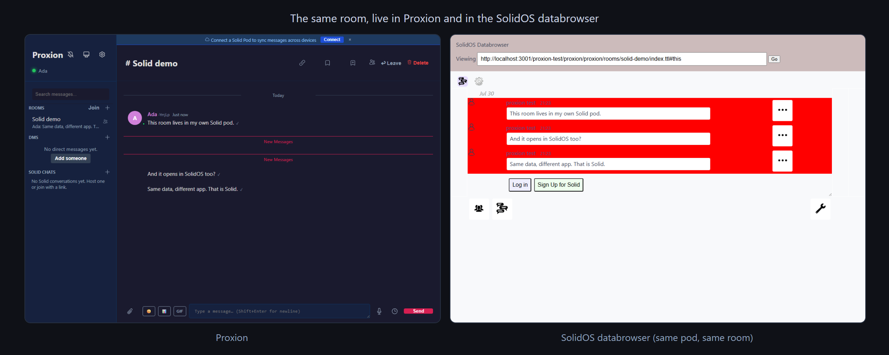

Built on the Solid Protocol · free & open source
The messenger that keeps your data yours.
Proxion is an end-to-end encrypted messenger where everything, including your messages, files, and call history, lives in your own Solid pod, on hardware you control. No account. No phone number. No company in the middle.
Windows x64 / ARM64 · macOS Intel / Apple Silicon · Linux x64 / ARM64 · or any browser (PWA)

Chat apps made you the product. This one makes you the owner.
Every mainstream messenger stores your conversations in someone else's data center, under someone else's terms. Proxion inverts that.
Your data, in your pod
Message history is written to a Solid pod that you choose: a free community provider, a server in your closet, or no pod at all. Leave any time and the data goes with you.
Actually private
Direct messages are end-to-end encrypted on the wire, so no relay in the middle can read them, while your pod stays open data other Solid apps can read. Per-contact safety numbers verify out loud; your identity is a key made on your machine, so there is no signup and nothing to leak.
No lock-in, by design
Open source, open protocol, standard data. Gateways federate peer-to-peer, so friends on their own servers can reach you without any central registry. Nobody can shut it off.
The main event
Built on Solid, the web's plan to give your data back
Solid is the re-decentralization project started by Sir Tim Berners-Lee, the inventor of the web: your data lives in a personal online datastore (a pod) that applications visit with your permission, instead of keeping it for themselves.
Standards-compliant pod storage
Proxion speaks the Solid Protocol directly: WebID identity, DPoP-bound tokens, authenticated reads and writes to any spec-compliant pod server. It is a Solid app, not a silo with an export button.
Portable by construction
Your conversations are resources in your pod. Point another Solid app at them, migrate providers, or self-host. No vendor's permission required, ever.
Or run with no pod at all
Pod-less mode keeps everything in a local database on your machine. Connect a pod later and Proxion syncs your history across devices through it.
Works with
- solidcommunity.netFree pods run by the Solid community. No cost, sign up in a minute.
- Your own serverSelf-host the Community, JS, or Node Solid Server: full sovereignty, one command to start.
- Any spec-compliant podWebID and DPoP with WAC or ACP access control, so enterprise Solid servers work too.
Not a walled garden
Your rooms work in other Solid apps, not just this one
A Proxion room is standard Solid Long Chat, so the rest of the Solid ecosystem can read and write it. Each of these is checked in CI against the real apps, not claimed from a spec.

Opens in SolidOS
Point the SolidOS databrowser at a Proxion room and it shows as a chat, every message and author intact.
Discoverable
Each room registers in your pod's type index, so another Solid app finds your chats without being handed a URL.
Invite anyone
Discover the chats a WebID hosts and join one, or send an invitation to their standard Solid inbox that any Solid app can read.
Real-time
New posts arrive over the Solid Notifications protocol, so a message another app writes into a shared room shows up live. Invitations reach you even with the app closed.
Survives the gateway
A room's structure lives in your pod as a signed record, so a fresh gateway can rebuild the room from your pod alone.
A complete messenger, not a compromise
Sovereignty doesn't mean settling for less.
End-to-end encryption
Modern ratcheting encryption for DMs, with verifiable per-contact safety numbers.
Voice & video calls
Peer-to-peer WebRTC voice, video, and screen sharing, encrypted end to end and identity-authenticated so no server sits in the middle.
Rooms & DMs
Group rooms with moderation, pins, and mentions alongside private one-to-one threads.
Files & media
Attachments, image previews, reactions, edits, and message search.
Disappearing messages
Per-thread timers, plus scheduled send for messages that should arrive later.
Federation
Add friends by their Proxion address. Gateways talk directly, no central registry.
Multi-device
Link your phone and laptop; encrypted messages fan out to every device you've approved.
Accessible & multilingual
WCAG 2.2 AA, full keyboard support, 16 languages including right-to-left Arabic.
Download Proxion
Free and open source. One native app that is also its own server: no account, no Docker, no config. Pick your platform, or open it in any browser as a PWA.
brew install cafeTechne/proxion/proxionRunning in two minutes
Download and run
One native executable. No Docker, no database to install, no config required. It's your personal gateway: the app and the server are the same download.
Choose where your data lives
On first launch, pick a free Solid pod provider, connect your own server, or skip pods entirely and stay local. You can change your mind later.
Share your address
You get a Proxion address instead of a phone number. Friends add it from their own gateway; a verified, end-to-end encrypted thread opens between you.
Why does my OS show a caution prompt on first launch?
Proxion ships free and unsigned-by-a-vendor on purpose, with no Apple or Microsoft gatekeeping, no certificate fees, no middleman. Updates are still cryptographically verified against Proxion's own signing key; the OS just can't phone home to a paid certificate authority, so it asks once. Linux shows no prompt at all.